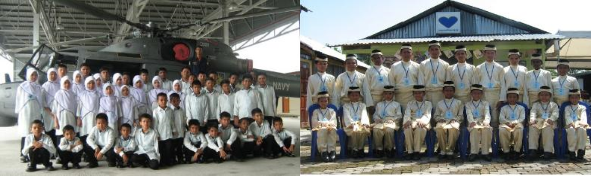

PERTUBUHAN KEBAJIKAN KASIH NURUL IMAN NEGERI PERAK
WELCOME TO RUMAH NURUL IMAN
"A home for Every Child, A Future for All"
INTRODUCTION
Perak State Charity Organization Kasih Nurul Iman or Rumah Nurul Iman is a non-governmental organization (NGO)
that operates the Nurul Iman Orphan and Poor Children's Care Center. This organization carries out activities to
provide protection, care and education to orphans and poor children free of charge.
To ensure that the social work journey of Perak State Charity Organization Kasih Nurul Iman achieves its goals,
all social work affairs will be carried out in accordance with the established policies and the requirements of
the laws of the Government of Malaysia.
MISSION
Committed to provide a supportive and structured environment that nurtures the well-being and development of every child under our care
VISION
Committed to being a responsible and trustworthy charitable organization in providing welfare services to orphans and underprivileged children, in full compliance with the Children’s Act 2001 and the Care Centers Act 1993.
Management
Professionally managed by 4 officers and 6 support staff.
Financial Resources
There is no fixed source of funding. 10% from the founders and others, from donation.
Monthly Requirements
RM14,000 is needed each month for rent, salary, food and education costs.